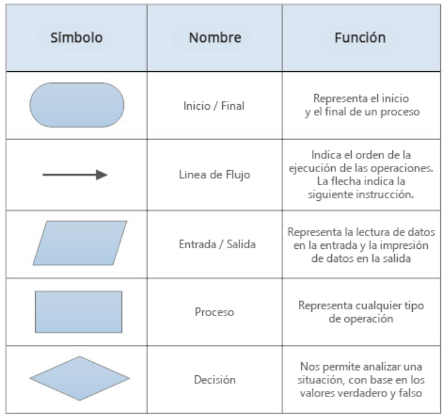
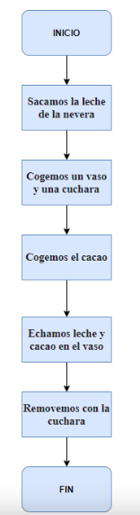

Representación gráfica, generalmente esquemática de algo.
Ejemplo
Hubo disparidad de opiniones.
D2
Definición
Diferencia o desigualdad de una cosa respecto a otra.
Ejemplo
Hubo disparidad de opiniones.
D3
Definición
Diferencia o desigualdad de una cosa respecto a otra.
Ejemplo
Hubo disparidad de opiniones.
1. Introducción
En nuestro día a día hacemos esquemas de las ideas principales de un tema, o utilizamos señales gráficas, como las señales de tráfico, para entender de forma clara indicaciones sin necesidad de leer grandes textos.
De la misma manera, los algoritmos pueden representarse gráficamente, para así tener una visión general de los pasos a seguir.
2. Descubriendo
La forma más habitual de representar un algoritmo es el diagrama de flujo.
Los diagramas de flujo son unos símbolos conectados de arriba a abajo, que representan ordenes que damos al ordenador, según su forma, realizan distintas funciones.
Los símbolos utilizados en los diagramas de flujo son los siguientes:

Primero vamos a escribir los pasos del algoritmo de cómo nos hacemos un vaso de leche con cacao:
1º Sacamos la leche de la nevera
2º Cogemos un vaso y una cuchara
3º Cogemos el cacao
4º Echamos leche y cacao en el vaso
5º Removemos con la cuchara
Ahora vamos a hacer el diagrama de flujo del ejemplo anterior:

AHORA COPIA EN TU CUADERNO LO QUE ES UN DIAGRAMA DE FLUJO Y LA TABLA CON LOS SÍMBOLOS QUE UTILIZAMOS PARA HACER DIAGRAMAS DE FLUJO.
Lectura facilitada
Las medidas de dispersión más utilizadas son la varianza y la desviación típica.
La varianza se representa \( \sigma ^2 \).
La desviación típica es la raíz cuadrada de la varianza.
La desviación típica se representa \( \sigma \).
La varianza y la desviación típica miden lo cerca o lejos
que están los datos de la media.
La varianza es más sencilla de calcular.
La varianza es más difícil de interpretar, se mide en unidades al cuadrado.
La desviación típica se tarda más en calcular.
La desviación típica se mide en la misma unidad que la variable.
Ejemplo:
En un grupo de cuatro alumnos, los votos con el número de días que ir de vacaciones son: 3 días, 4 días, 6 días y 7 días.
La media es 5 días, la varianza es 2.5 días y la desviación típica es 1.58 días.
En otro grupo los votos han sido: 1 día, 2 días, 8 días y 9 días.
La media es 5 días, la varianza 12.5 días y la desviación típica 3.53 días.
Los votos del primer grupo están más cerca de la media que los votos del segundo grupo.
Por eso, la varianza y la desviación típica del primer grupo es menor.
3. En vídeo
Audio
4. ¡Vamos a practicar con un ejemplo!
1º.- Realiza el diagrama de flujo correspondiente al algoritmo con los pasos a seguir para calentar un vaso de leche con cacao en el microondas en tu cuaderno.
2º.- Cuando lo hayas hecho en tu cuaderno, trabajaréis en parejas dibujándolo con la siguiente aplicación web: https://app.diagrams.net/
Recuerda que debes enseñar a tu profe el algoritmo que has creado antes de que termine la clase.
Lectura facilitada
Primero se calcula la varianza.
Para calcular la desviación típica tienes que hacer
la raíz cuadrada de la varianza. \( \sqrt{\sigma^2}\)
Para calcular la varianza añadimos una columna nueva a la tabla de frecuencias.
Multiplicamos el cuadrado de cada modalidad por su frecuencia absoluta \( x_i ^2 \cdot n_i \)
Recuerda que la modalidad son las respuestas que tienes.
Luego sumaremos los valores de la columna nueva
y dividimos el resultado entre el tamaño de la población.